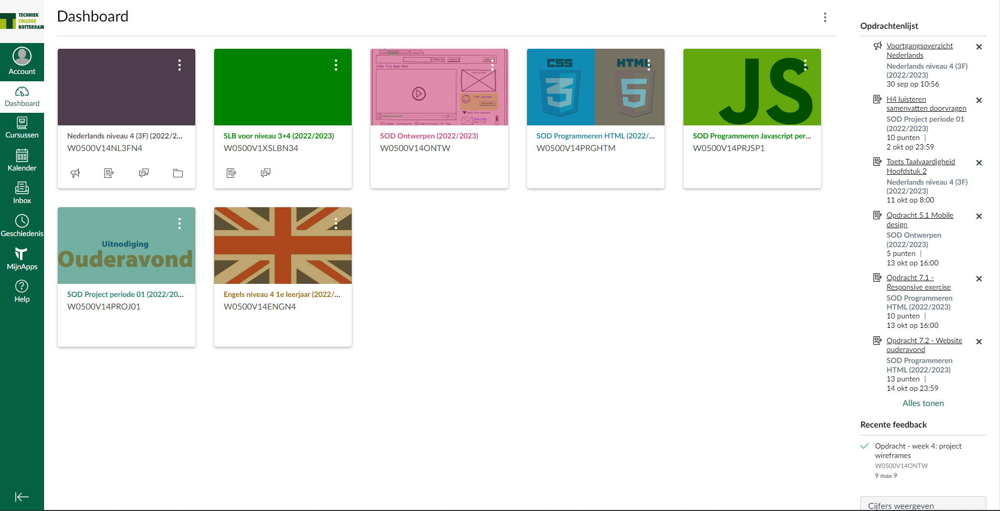
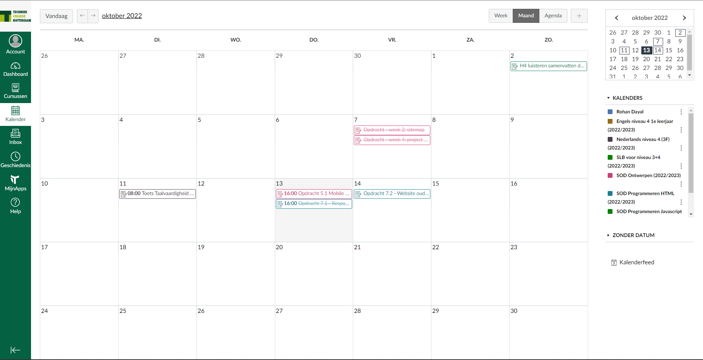

Wat is canvas
Canvas is een van de software die wij gebruiken voor onze opleiding. Leerlingen kunnen op Canvas hun opdrachten vinden en leraren kunnen de progressie van de leerlingen bij houden.
- Dashboard
- Cursussen
- Kalender
- Inbox
U kunt de opdrachten en resultaten van de opdrachten vinden als u op een van de volgende menu items klikt.
Dashboard
Op het dashboard kunt u de verschllende Cursussen vinden die wij bij deze opleiding krijgen. Deze periode waren dat Nederlands, Engels, Rekenen, Javascript, Ontwerpen, HTML&CSS en dit project. Ook u kunt daar de wekelijkse opdrachten en leerdoelen vinden.
Kalender
Op de kalender kun je zien wanneer je bepaalde opdrachten heb en wanneer je die moet inleveren. De veschillende vakken worden aangegeven met kleurtjes. ook kun je zelf items toevoegen waardoor het ook een leerling zijn eigen school agenda kan worden.
